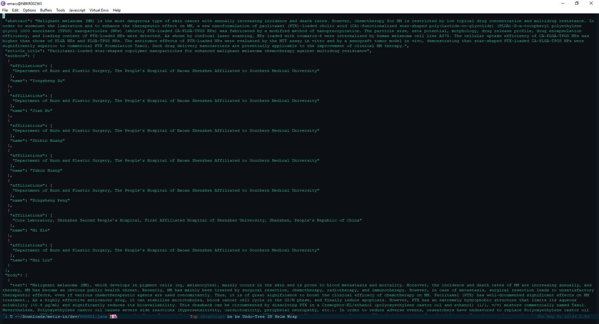
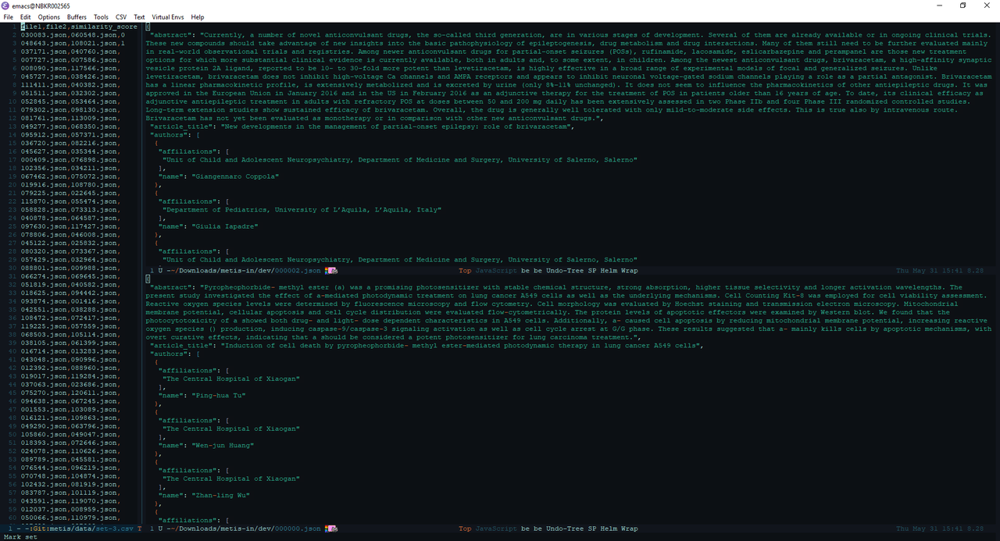
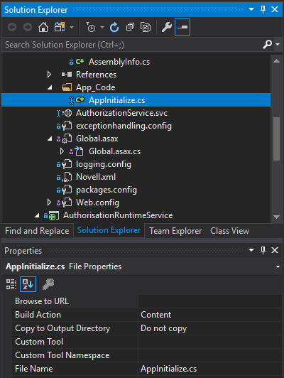
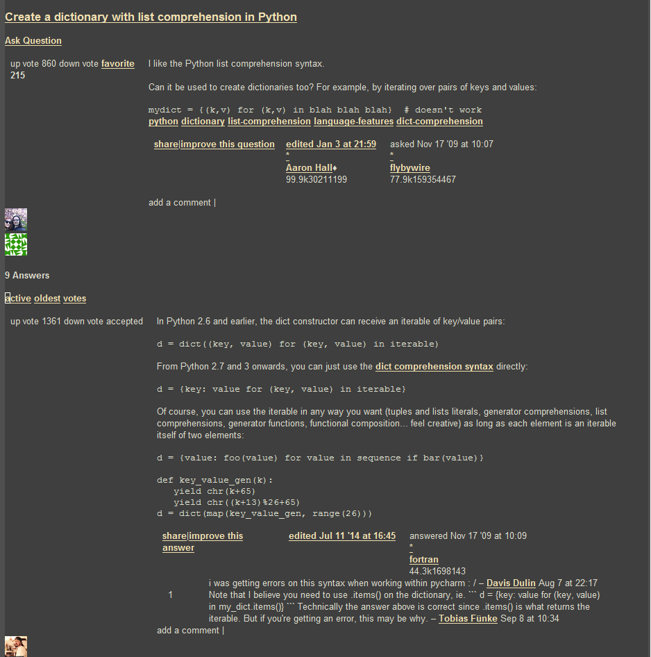

Don't release to Production, release to QA
Automate your release workflow to such extent that the QA engineers from your team become the users of the application.
Introduction
It's Friday afternoon, the end of the sprint, and a few hours before the weekend starts, and the QA engineers are performing the required tests on the last Sprint Backlog Item (SBI). The developer responsible for that item, confident that the SBI meets all acceptance criteria, is already in the weekend mood.
Suddenly, a notification pops up — there is an issue with the feature being tested. The developer jumps on it to see what the problem is, and after discussing with the QA engineer he/she finds out that the issue is caused by some leftover data from the previous SBI.
Having identified the problem, the developer spends a few minutes to craft a SQL script that will clean the data, and gives it to the QA engineer. The QA engineer runs the script on the QA database, starts testing the SBI from the beginning, and then confirms that the system is "back to normal".
Both sigh in relief while the SBI is marked as "Done" and the weekend starts. Bliss!
Getting to the root problem
Although the day and the sprint goal were saved, I would argue that applying the cleanup script just fixed an issue but left the root problem untouched. And to get to the root problem, let's take a closer look on what happened.
The database issue stems from the fact that instead of being kept as close as possible to production data (as the best practices suggest) the database grew to become an entity of its own through not being kept tidy by the team.
When testing a SBI involves changing some of the data from the database, it is not very often that those changes are reverted as soon as the SBI leaves the QA environment. With each such change the two databases (production and QA) grow further and further apart, and the probability of having to apply a workaround script increases each time. However the paradox is that the cleanup script, although it solves the issue, is yet another change to the data which widens even more the gap between QA and production databases.
And there lies our problem: not within the workaround script itself, but within the practice of applying workarounds to patch the proverbial broken pipes instead of building actual deployment pipelines.
But this problem goes one level deeper; sure, we can fix the problem at hand by restoring the database from a production backup but to solve the issue once and for all we need to change how we look at QA environment.
But our root-cause analysis is not complete yet. We can't just say "let's never apply workarounds" because workarounds are some sort of necessary evil. Let's look at why that is, shall we?
Why and when do we apply workarounds in production?
In Production environment a workaround is applied only in critical situations due to high risk of breaking the running system by making ad-hoc changes to it.
Unlike the QA environment where, when the system breaks only a few users are affected — namely the QA engineers, when the system halts in Production the costs of the downtime are much, much higher. An improper or forgotten where condition in a delete script which wipes out whole tables of data, and renders the system unusable, in the happiest case will lead only to frustrated customers that can't use the thing they paid for.
As such, in every critical situation first and foremost comes the assessment: is a workaround really needed?
When the answer is yes (i.e., there is no other way of fixing the issue now), then usually there are some procedures to follow. Sticking with the database script example, the minimal procedure would be to:
- create the workaround script,
- have that script reviewed and approved by at least one additional person, and
- have the script executed on Production by someone with proper access rights.
OK, now we're settled: workarounds are necessary in critical situations, and are applied after assessment, review, and approval. Then, going back to our story, the following question arises:
Why do we apply workarounds in QA environment?
QA environment is isolated from Production environment, and by definition it has way fewer users. Furthermore, those users have a lot of technical knowledge of how the system runs, and always have something else to do (like designing/writing test cases) while the system is being brought to normal again.
Looking from this point of view, there is almost never a critical situation that would require applying a workaround in QA environment.
Sure, missing the sprint goal may seem like a critical situation because commitments are important. But on the other hand, and going back to our example — if we're applying a workaround in QA just to promote some feature towards Production, are we really sure that the feature is ready?
Now that the assessment of criticality is done, let's get back to our topic and ask:
What if we treated QA environment like Production?
Production and QA environments are different (very different I may add); there's no doubt about that. What makes them different, from the point of view of our topic, is the fact that when a feature is deployed in Production environment, all the prerequisites are known, and all preliminary steps are executed.
On the other hand, when deploying to QA environment we don't always have this knowledge, nor do we have all the preliminary steps completed at all times. Furthermore, deploying on QA may require additional steps than on Production, e.g.: restoring the database to the last backup from Production, data anonymization etc.
But the difference between the number of unknowns can be compensated by the difference between number of deployments, and the fact that a failure in QA environment is not critical. In other words, what we lack in knowledge when deploying to QA environment can be compensated by multiple deployment trials, where each deployment trial gets closer and closer to success.
And when it comes to doing repetitive tasks…
Automation is key
To alleviate the difference between (successive) environments you only need to do one thing, although I must say from the start that achieving that one thing can be really hard — automate everything.
If a release workflow is properly (read fully) automated, then the difference between various environments is reduced mainly to:
- The group of people who have proper access rights to run the workflow on the specific environment. With today's' tools on the market the difference becomes simplified further — it is in the group of people that are allowed to see or to push the "Deploy" button.
- The number and order of "Deploy" buttons a person has to push for the deploy to succeed.
Although we strive to have our environments behave all the same, they are still inherently different. As such, it goes without saying that not everyone may have rights to deploy to Production, and — due to some constraints — on some environment there may be additional actions required to deploy. Nonetheless, the objective remains the same: avoid manual intervention as much as possible.
The Snowball Effect
Once achieved, the effects of this objective of having minimal manual intervention ripple through and start a snowball effect.
Efficiency
At first, you gain efficiency — there is no checklist to go through when deploying, no time needed to spend doing the tedious steps of deployment; the computers will perform those steps as quickly as possible and always in the same order without skipping any of them or making the errors that humans usually do when performing tedious work.
With a click of a button, or on a certain event the deployment starts and while it runs the people from the team are free to do whatever they want in the time it takes to deploy: they can have a cup of coffee, can make small talk with a colleague, or can mind the more important business like the overall quality of the product they're working on.
Speed
Furthermore, besides efficiency you can gain speed — just by delegating the deployment process to computers you gain time because computers do boring stuff a lot quicker than humans.
With efficiency and speed comes reduced integration friction. A common effect of reduced integration friction is an increase in integration frequency. High integration frequency coupled with workflow automation leads to an increase in the number of deployments that are made.
And this is where the magic unravels.
Tight feedback loop
Once you automate the repetitive tasks you free-up the time of the QA engineer, which allows him/her to spend more time with the system(s) they are testing. In other words, the time gained through workflow automation is invested into the actual Quality Assurance of the system under test.
And when the QA engineer invests more time into the testing process, he/she will be able to spot more issues. With enough repetitions enabled by quick deployments, the QA engineer acquires a certain amount of skills which will enable him/her to spot defects faster. The sooner a defect is spotted, the sooner it is reported, and subsequently, the sooner it gets fixed.
We have a name for this thing — it's called a feedback loop. The feedback loop is not introduced by automation — it was long present in the project, but once workflow automation is introduced it tightens the feedback loop, which means we, as developers, have to wait less time to see the effects of the changes we introduced into the system. In our specific case, we have to wait less because workflow automation reduces the time of the deployment to QA environment to minimum.
Improved user experience
But wait, there's more! The time that the QA engineer gets to invest into growing his/her skills is spent using the system under test. With more time spent using the system under test, the QA engineer gets closer and closer to the mindset of the real users of the system. And while in this mindset, the QA engineer not only understands what the system does for the user but also understands what the user wants to do.
Of course, this understanding is bound by a certain maximum but nonetheless, the effect it has on the development process is enormous.
First and foremost, there is an increase in the quality of the system: when the QA engineers have a sound understanding of what the user wants to do they will make sure that the system indeed caters to the needs of its users. This in itself is a huge win for the users alone but this also benefits the entire team — the knowledge about the system gets disseminated within the whole team (including developers), and the Product Owner (PO) is not the bottleneck anymore.
Furthermore, with more time spent in the mindset of a user, the QA engineer will start striving for an improved user experience because he/she, like the real users of the system, will strive to do thing faster.
As such, the QA engineer starts suggesting some usability improvements of the system. These improvements are small — e.g., change the order of the menu items, add the ability to have custom shortcuts on the homepage etc, but they do improve the experience of the user.
Sure, all of those changes must be discussed with the team and approved by the PO but those who get approved bring the system closer to what the actual users want.
Allow the QA engineer to be an user of the system
The main role of a QA engineer is to ensure that the system under test satisfies the needs of its users. As such, the QA engineer needs to think like a user, to act like a user, and to be able to quickly shift from the mindset of the user to the mindset of the problem analyst required by the job description.
But if you take from the QA engineer all the hassle of deployment and fiddling with making the system run properly in the testing environment you are unlocking more time for him/her to spend in the mindset of an actual user, and having a user of the system close by is a treasure trove for building it in such a way that the system accomplishes its purpose — catering to the needs of his users.
As a developer, it may be strange to look at your colleague — the QA engineer — like at an user of the system you're both working on. After all, you both know a lot more of what's under the hood of that system for any of you to be considered just a simple user of it.
But it is a change worth making. And, as the saying goes, to change the world you need to start with changing yourself. This change comes when you treat QA environment as production environment and make all the efforts needed to uphold the delivery to QA to the same rigor as delivery to production. In essence, it's nothing but a shift in the mindset that was already mentioned in the title — don't release to Production, release to QA.
Keep the tools separate from the domain of your application
At my previous job we had an Architecture club where we held regular meetings to discuss issues related to the architectural decisions of various applications, be it an application developed within the company or elsewhere. One of the latest topics discussed within the architecture club was whether to use or not MediatR (and implicitly the Mediator pattern) in a project based on CQRS architecture.
If you're not familiar with MediatR, it's a library that relays messages to their destination in an easy to use and elegant manner in two ways: it dispatches requests to their handlers and sends notifications to subscribers.
The Mediator pattern itself is defined as follows:
Define an object that encapsulates how a set of objects interact. Mediator promotes loose coupling by keeping objects from referring to each other explicitly, and it lets you vary their interaction independently.
I'm going to step a bit back and give some additional context regarding this meeting. I wasn't able to attend the meetings of the club since mid February because the meetings overlapped with a class I teach. In an afternoon my colleague George, the founder of the club, told me that the topic of the next meeting will be whether to use or not MediatR and knowing that I use MediatR on my side project it would be nice for me to weigh-in my opinion.
At first, I must confess, I was taken aback — for me there was never a doubt; MediatR is a great tool and should be used in a CQRS architecture. This is why I said I would really like to hear what other members have to say — especially those opposing the use of MediatR.
As the discussion went on I concluded that the problem wasn't whether to use or not to use MediatR but rather how it was used. And it was used as the centerpiece of the big ball of mud.
The discussion started with back-referencing a presentation at a local IT event, where the same topic was put upfront: to use or not to use MediatR? Afterwards, the focus of the discussion switched to a project where the mediator pattern was imposed to be used for every call pertaining to business logic and even more than that — even the calls to AutoMapper were handled via the mediator. In other words, the vast majority of what should have been simple method calls became calls to mediator.Send(new SomeRequest{...}).
In order to avoid being directly coupled to MediatR library the project was hiding the original IMediator interface behind a custom interface (let's call it ICustomMediator) thus ensuring a low coupling to the original interface. The problem is that, although the initial intention was good, the abundance of calls to the custom mediator creates a dependency of application modules upon the custom defined interface. And this is wrong.
Why is that wrong?, you may ask. After all, the Dependency Inversion principle explicitly states that "classes should depend on interfaces" and since in the aforementioned project classes depend on an ICustomMediator interface which doesn't change even when the original interface changes then it's all good, right?
Wrong. That project did not avoid coupling, it just changed the contract it couples to from an interface defined in a third-party library to an interface defined within. That's it; it is still tightly coupled with a single interface. Even worse, that interface has become the centerpiece of the whole application, the God service, which hides the target from the caller behind at least two (vertical) layers and tangles the operations of a business transaction into a big ball of mud. While doing so, it practically obliterates the boundaries between the modules which changes application modules from being highly cohesive pieces to lumps of code which "belong together".
Furthermore, and this is the worst part, the ICustomMediator has changed its role from being a tool which relays commands to their respective handlers to being part of the application domain, i.e. the role of mediator changed from implementation detail to first class citizen of the application. This shift is subtle but dangerous and not that easy to observe because the change creeps in gradually akin to the gradual increase of the temperature of water in the boiling frog fable.
The shift happens because all the classes that need to execute a business operation which is not available as a method to invoke will have a reference to the mediator in order to call the aforementioned operation. As per Law of Demeter (only talk to your immediate friends) that makes the ICustomMediator a friend of all the classes involved in implementing some business logic. And a friend of a domain object (entity, service etc.) is a domain object itself. Or at least it should be.
OK, you might say, then what's the right way to use the mediator here? I'm glad you asked. Allow me to explain myself by taking (again) a few steps back.
Ever since I discovered MediatR I've seen it as the great tool it is. I remember how, while pondering upon the examples from MediatR documentation and how I could adapt those for my project I started running some potential usage scenarios in my head. After a short time some clustering patterns started to emerge from those usage scenarios. The patterns weren't that complicated — a handler that handles a payment registration should somehow belong together with a handler that queries the balance of an account, whereas the handler that deals with customer information should belong somewhere else.
These patterns are nothing else than a high degree of cohesion between each of the classes implementing the IHandler interface from MediatR and to isolate them I've organized each such cluster into a separate assembly.
Having done that another pattern emerged from all the handlers within an assembly: each of the handlers were handling an operation of a single service.
Obviously, the next logical thing was to actually define the service interface which listed all the operations performed by the handlers within that assembly. And since the interface needs an implementation I've created a class for each service which calls mediator.Send() with the proper parameters for the specific handler and returns the results. This is how it looks:
public interface IAccountingService
{
void RegisterPayment(RegisterPaymentCommand paymentDetails);
GetAccountBalanceResponse GetAccountBalance(GetAccountBalanceRequest accountId);
GetAllPaymentsResponse GetAllPayments();
}
class AccountingService: IAccountingService
{
private readonly IMediator _mediator;
public AccountingService(IMediator mediator)
{
_mediator = mediator;
}
public void RegisterPayment(RegisterPaymentCommand paymentDetails)
{
_mediator.Send(paymentDetails);
}
public GetAccountBalanceResponse GetAccountBalance(GetAccountBalanceRequest accountId)
{
return _mediator.Send(GetAccountBalanceRequest);
}
public GetAllPaymentsResponse GetAllPayments()
{
return _mediator.Send(new GetAllPaymentsRequest());
}
}
As a result I do have more boilerplate code but on the upside I have:
- A separation of the domain logic from the plumbing handled by MediatR. If I want to switch the interface implemented by each handler I can use search and replace with a regex and I'm done.
- A cleaner service interface. For the service above, the handler that returns all payments should look like this:
public class GetAllPaymentsRequest: IRequest<GetAllPaymentsResponse>
{
}
public class GetAllPaymentsResponse
{
public IEnumerable<Payment> Payments {get; set;}
}
public GetAllPaymentsRequestHandler: RequestHandler<GetAllPaymentsRequest, GetAllPaymentsResponse>
{
protected override GetAllPaymentsResponse Handle(GetAllPaymentsRequest request)
{
// ...
}
}
In order to call this handler you must provide an empty instance of GetAllPaymentsRequest to mediator but such restriction doesn't need to be imposed on the service interface. Thus, the consumer of IAccountingService calls GetAllPayments() without being forced to provide an empty instance which, from consumers' point of view, is useless.
However, the greatest benefit from introducing this new service is that it is a domain service and does not break the Law of Demeter while abstracting away the technical details. Whichever class will have a reference to an instance of IAccountingService, it will be working with something pertaining to the Accounting domain thus when invoking a method from the IAccountingService it will call a friend.
This pattern also makes the code a lot more understandable. Imposing a service over the handlers that are related to each-other unifies them and makes their purpose more clear. It's easier to understand that I need to call subscriptionsService to get a subscription but it becomes a little more cluttered when I call mediator.Send(new GetSubscriptionRequest{SubscriptionId = id}) because it raises a lot of questions. Who gives me that subscription in the end and where it resides? Is this a database call or a network call? And who the hell is this mediator dude?
Of course, the first two questions may rise when dealing with any interface and they should be always on the mind of programmers because the implementation may affect the performance, but performance concerns aside, it's just easier to comprehend the relationships and interactions when all the details fit together. And in a class dealing with Accounting domain a call to mediator just doesn't fit.
Back to the main point, there's the question of what if I need to make a request through a queue (RabbitMq for example)? Let's assume I have a class which needs to get some details using a call to mediator but afterwards needs to write some data to a queue within the same business transaction. In such case, I have to either:
- inject into my class an instance that knows how to talk to the queue and an instance of mediator or
- have another mediator handler which does the write and perform two separate calls to mediator.
By doing this I'm polluting the application logic with entities like mediator, queue writer etc., entities which are pertaining to application infrastructure not application domain. In other words, they are tools not building blocks. And tools should be replaceable. But how do I replace them if I have references to them scattered all over the code-base? With maximum effort, as Deadpool says.
This is why you need to separate tools from application domain. And this is how I achieved this separation: by hiding the implementation details (i.e. tooling) behind a service interface which brings meaning to the domain. This way, when you change the tools, the meaning (i.e. intention) stays the same.
Acknowledgments
I would like to thank my colleagues for their reviews of this blog post. Also a big thank you goes to all the members of Centric Architecture Club for starting the discussion which led to this blog post.
Building a Python IDE with Emacs and Docker
Prologue
I am a fan of Windows Subsystem for Linux. It brings the power of Linux command-line tools to Windows which is something a developer cannot dislike but that isn't the main reason I'm fond of it. I like it because it allows me to run Emacs (albeit in console mode) at its full potential.
As a side-note, on my personal laptop I use Emacs on Ubuntu whereas on the work laptop I use Emacs from Cygwin. And although Cygwin does a great job in providing the powerful Linux tools on Windows, some of them are really slow compared to the native ones. An example of such a tool is git. I heavily use Magit for a lot of my projects but working with it in Emacs on Cygwin is a real pain. Waiting for a simple operation to finish knowing that the same operation completes instantly on Linux is exhausting. Thus, in order to avoid such unpleasant experience whenever I would need to use Magit I would use it from Emacs in Ubuntu Bash on Windows.
Furthermore, I use Ubuntu Bash on Windows to work on my Python projects simply because I can do everything from within Emacs there — from editing input files in csv-mode, to writing code using elpy with jedi and pushing the code to a GitHub repo using magit.
All was good until an update for Windows messed up the console output on WSL which rendered both my Python setup and Emacs unusable. And if that wasn't bad enough, I got affected by this issue before a very important deadline for one of the Python projects.
Faced with the fact that there nothing I could do at that moment to fix the console output and in desperate need for a solution, I asked myself:
Can't I create the same setup as in
WSLusingDocker?
The answer is Yes. If you want to see only the final Dockerfile, head directly to the TL;DR section. Otherwise, please read along. In any case — thanks for reading!
How
Since I already have been using Emacs as a Python IDE in Ubuntu Bash, replicating this setup in Docker would imply:
- Providing remote access via
sshto the container and - Installing the same packages for both the OS and Emacs.
I already knew more or less how to do the later (or so I thought) so obviously I started with the former: ssh access to a Docker container.
Luckily, Docker already has an example of running ssh service so I started with the Dockerfile provided there. I copied the instructions into a local Dockerfile, built the image and ran the container. But when I tried to connect to the container I ran into the first issue addressed in this post:
Issue #1: SSHD refuses connection
This one was easy — there's a typo in the example provided by Docker. I figured it out after inspecting the contents of sshd_config file.
After a while I noticed that the line containing PermitRootlogin was commented-out and thus sed wasn't able to match the pattern and failed to replace the permission.
Since I was connecting as root the sshd refused connection.
The fix for this is to include the # in the call to sed as below:
RUN sed -i 's/#PermitRootLogin prohibit-password/PermitRootLogin yes/' /etc/ssh/sshd_config
Having done the change, I rebuilt the image and started the container. As the tutorial mentioned, I ran in console docker port <container-name> 22. This command gave me the port on which to connect so I ran ssh root@localhost -p <port>.
Success.
Even though the sshd was running and accepting connections, the fact that the root password was hard-coded in plain text really bothered me so I made a small tweak to the Dockerfile:
ARG password
RUN echo "root:${password}" | chpasswd
What this does is it declares a variable password whose value is supplied when building the image like this:
docker build -t <image-tag> \
--build-arg password=<your-password-here> \
.
This way, the root password isn't stored in clear text and in plain-sight anymore. Now I was ready to move to the next step.
Issue #2: Activating virtual environment inside container
The second item of my quest was to setup and activate a Python virtual environment. This environment will be used to install all the dependencies required for the project I'm working on.
Also, this environment will be used by Emacs and elpy to provide the features of an IDE.
A this point I asked myself: do I actually need a virtual environment? The Ubuntu Docker image comes with Python preinstalled so why not install the dependencies system-wide? After all, Docker containers and images are somewhat disposable — I can always recreate the image and start a new container for another project.
I decided I need a virtual environment because otherwise things would get messy and I like well organized stuff.
So I started looking out how to setup and activate a virtual environment inside a Docker container. And by looking up I mean googling it or, in my case — googling it with Bing.
I got lucky since one of the first results was the article that led to my solution: Elegantly activating a virtualenv in a Dockerfile. It has a great explanation of what needs to be done and what's going under the hood when activating a virtual environment.
The changes pertaining to my config are the following:
ENV VIRTUAL_ENV=/opt/venv
RUN python3 -m virtualenv --python=/usr/bin/python3 $VIRTUAL_ENV
ENV PATH="$VIRTUAL_ENV/bin:$PATH"
RUN pip install --upgrade pip setuptools wheel && \
pip install numpy tensorflow scikit-learn gensim matplotlib pyyaml matplotlib-venn && \
pip install elpy jedi rope yapf importmagic flake8 autopep8 black
As described in the article linked above, activating a Python virtual environment in its essence is just setting some environment variables.
What the solution above does is to define where the virtual environment will be created and store it into the VIRTUAL_ENV variable. Next, create the environment at the specified path using python3 -m virtualenv $VIRTUAL_ENV. The --python=/usr/bin/python3 argument just makes sure that the python interpreter to use is indeed python3.
Activating the virtual environment means just prepending its bin directory to the PATH variable: ENV PATH="$VIRTUAL_ENV/bin:$PATH".
Afterwards, just install the required packages as usual.
Issue #3: Emacs monolithic configuration file
After setting up and activating the virtual environment, I needed to configure Emacs for python development to start working.
Luckily, I have my Emacs (semi-literate) config script in a GitHub repository and all I need to do is jut clone the repo locally and everything should work. Or so I thought.
I cloned the repository containing my config, which at that time was just a single file emacs-init.org bootstrapped by init.el, logged into the container and started Emacs.
After waiting for all the packages to install I was greeted by a plethora of errors and warnings: some packages were failing to install due to being incompatible with the Emacs version installed in the container, some weren't properly configured to run in console and so on and so forth.
Not willing to spend a lot of time on this (I had a deadline after all) I decided to take a shortcut: why don't I just split the configuration file such that I would be able to only activate packages related to Python development? After all, the sole purpose of this image is to have a setup where I can do some Python development the way I'm used to. Fortunately, this proved to be a good decision.
So I split my emacs-init.org file into four files: one file for tweaks and packages that I want to have everywhere, one file for org-mode related stuff, one file for Python development and lastly one file for tweaks and packages that I would like when I'm using Emacs GUI. The init.el file looked like this:
(require 'package)
(package-initialize)
(org-babel-load-file (expand-file-name "~/.emacs.d/common-config.org"))
(org-babel-load-file (expand-file-name "~/.emacs.d/python-config.org"))
(org-babel-load-file (expand-file-name "~/.emacs.d/org-config.org"))
(org-babel-load-file (expand-file-name "~/.emacs.d/emacs-init.org"))
Now I can use sed on the init.el file to delete the lines that were loading troublesome packages:
sed -i '/^.*emacs-init.*$/d' ./.emacs.d/init.el && \
sed -i '/^.*org-config.*$/d' ./.emacs.d/init.el
After starting a container from the new image I started getting some odd errors about failing to verify package signature. Again, googling the error message with Bing got me a quick-fix: (setq package-check-signature nil). This fix is actually a security risk but since it would be applied to an isolated environment I didn't bother looking for a better way.
However, another problem arose — how can I apply this fix without committing it to the GitHub repository?
Looking back at how I used sed to remove some lines from init.el file one of the first ideas that popped into my head was to replace an empty line from init.el with the quick-fix, but after giving it some more thought I decided to use a more general solution that involves a little bit of (over) engineering.
Since I'm interested in altering Emacs behavior before installing packages it would be good to have a way to inject more Lisp code than a single line. Furthermore, in cases where such code consists of multiple lines I could just add it using Dockers' ADD command instead of turning into a maintenance nightmare with multiple sed calls.
Don't get me wrong: sed is great but I prefer to have large chunks of code in a separate file without the added complexity of them being intertwined with sed calls.
The solution to this problem is quite simple: before loading configuration files, check if a specific file exists; in my case it would be config.el (not a descriptive name, I know) located in .emacs.d directory. If file exists load it. Afterwards load the known configuration files. And since we're doing this, why not do the same for after loading the known configuration files?
Thus, the resulting init.el looks like this (I promise to fix those names sometimes):
(require 'package)
(package-initialize)
(let ((file-name (expand-file-name "config.el" user-emacs-directory)))
(if (file-exists-p file-name)
(load-file file-name)))
(org-babel-load-file (expand-file-name "~/.emacs.d/common-config.org"))
(org-babel-load-file (expand-file-name "~/.emacs.d/python-config.org"))
(org-babel-load-file (expand-file-name "~/.emacs.d/org-config.org"))
(org-babel-load-file (expand-file-name "~/.emacs.d/emacs-init.org"))
(let ((file-name (expand-file-name "after-init.el" user-emacs-directory)))
(if (file-exists-p file-name)
(load-file file-name)))
Now I just need to create the file and apply the fix:
echo "(setq package-check-signature nil)" >> ./.emacs.d/config.el
And since I can run custom code after loading the known configuration files I can set elpy-rpc-virtualenv-path variable in the same way:
echo "(setq elpy-rpc-virtualenv-path \"$VIRTUAL_ENV\")" >> ./.emacs.d/after-init.el
The Dockerfile code for this section is below:
RUN cd /root/ && \
git clone https://github.com/RePierre/.emacs.d.git .emacs.d && \
echo "(setq package-check-signature nil)" >> ./.emacs.d/config.el && \
sed -i '/^.*emacs-init.*$/d' ./.emacs.d/init.el && \
sed -i 's/(shell . t)/(sh . t)/' ./.emacs.d/common-config.org && \
sed -i '/^.*org-config.*$/d' ./.emacs.d/init.el && \
sed -i 's/\:defer\ t//' ./.emacs.d/python-config.org && \
echo "(setq elpy-rpc-virtualenv-path \"$VIRTUAL_ENV\")" >> ./.emacs.d/after-init.el
It does one more thing not mentioned previously: a sed call to remove lazy loading of packages from python-config.org file.
Issue #4: Using SSH keys to connect to GitHub
Now that I have Emacs running on Ubuntu (albeit terminal only) I can enjoy a smooth workflow without having to wait too much for Magit or other application that took forever on Cygwin to finish.
But there's an issue. I mount the repository I'm working on as a separate volume in the Docker container which allows Magit to read all required info (like user name etc.) directly from the repository. However, I cannot push changes to GitHub because I'm not authorized.
To authorize the current container to push to GitHub I need to generate a pair of keys for the SSH authentication on GitHub. But this can become, again, a maintenance chore: for each new container I need to create the keys, add them to my GitHub account and remember to delete them when I'm finished with the container.
Instead of generating new keys each time, I decided to reuse the keys I already added to my GitHub account; the image I'm building will not leave my computer so there's no risk of someone getting ahold of my keys.
I found how to do so easily: there's a StackOverflow answer for that. Summing it up is that you need to declare two build arguments that will hold the values for the private and public keys and write the values to their respective files. Of course, this implies creating the proper directories and assigning proper rights to the files. As an added bonus, the answer shows a way to add GitHub to the known hosts. This is how it looks in the Dockerfile:
ARG ssh_prv_key
ARG ssh_pub_key
RUN mkdir -p /root/.ssh && \
chmod 0700 /root/.ssh && \
ssh-keyscan github.com > /root/.ssh/known_hosts
To provide the values for the keys use --build-arg parameter when building your image like this:
docker build -t <image-tag> \
--build-arg ssh_prv_key="$(cat ~/.ssh/id_rsa)" \
--build-arg ssh_pub_key="$(cat ~/.ssh/id_rsa.pub)" \
.
Issue #5: Install Emacs packages once and done
After another build of the Docker image I started a container from it, logged in via ssh into the container, started Emacs and noticed yet another issue.
The problem was that at each start of the container I had to wait for Emacs to download and install all the packages from the configuration files which, as you can guess may take a while.
Since looking-up the answer on the Web did not return any meaningful results I started refining my question to the point where I came-up with the answer. Basically, when after several failed attempts I started typing in the search bar how to load Emacs packages in background I remembered reading somewhere that Emacs can be used in a client-server setup where the server runs in background.
This is a feature of Emacs called daemon mode. I have never used it myself but went on a whim and decided to try it just to see what would happen.
So I changed my Dockerfile to start Emacs as a daemon:
RUN emacs --daemon
And to my great surprise, when rebuilding the image I saw the output of Emacs packages being downloaded and installed.
Issue #6: Terminal colors
Being confident that everything should work now (it's the same setup I had on WSL) I started a new container to which I mounted the GitHub repo as a volume and got cracking.
Everything went swell until I decided to commit the changes and invoked magit-status. Then I got a real eyesore: the colors of the text in the status buffer were making it really hard to understand what changed and where.
At this point I just rage-quit and started looking for an answer. Fortunately, the right StackOverflow answer popped up quickly and I applied the fix which just sets the TERM environment variable:
ENV TERM=xterm-256color
And only after this, I was able to fully benefit from having the Python IDE I'm used to on a native platform.
TL;DR
The full Dockerfile described in this post is below:
FROM ubuntu:18.04
RUN apt-get update && \
apt-get install -y --no-install-recommends openssh-server tmux \
emacs emacs-goodies.el curl git \
python3 python3-pip python3-virtualenv python3-dev build-essential
ARG password
RUN mkdir /var/run/sshd
RUN echo "root:${password}" | chpasswd
RUN sed -i 's/#PermitRootLogin prohibit-password/PermitRootLogin yes/' /etc/ssh/sshd_config
# SSH login fix. Otherwise user is kicked off after login
RUN sed 's@session\s*required\s*pam_loginuid.so@session optional pam_loginuid.so@g' -i /etc/pam.d/sshd
ENV NOTVISIBLE "in users profile"
RUN echo "export VISIBLE=now" >> /etc/profile
# From https://pythonspeed.com/articles/activate-virtualenv-dockerfile/
ENV VIRTUAL_ENV=/opt/venv
RUN python3 -m virtualenv --python=/usr/bin/python3 $VIRTUAL_ENV
ENV PATH="$VIRTUAL_ENV/bin:$PATH"
RUN pip install --upgrade pip setuptools wheel && \
pip install numpy tensorflow scikit-learn gensim matplotlib pyyaml matplotlib-venn && \
pip install elpy jedi rope yapf importmagic flake8 autopep8 black
RUN cd /root/ && \
git clone https://github.com/RePierre/.emacs.d.git .emacs.d && \
echo "(setq package-check-signature nil)" >> ./.emacs.d/config.el && \
sed -i '/^.*emacs-init.*$/d' ./.emacs.d/init.el && \
sed -i 's/(shell . t)/(sh . t)/' ./.emacs.d/common-config.org && \
sed -i '/^.*org-config.*$/d' ./.emacs.d/init.el && \
sed -i 's/\:defer\ t//' ./.emacs.d/python-config.org && \
echo "(setq elpy-rpc-virtualenv-path \"$VIRTUAL_ENV\")" >> ./.emacs.d/after-init.el
# From https://stackoverflow.com/a/42125241/844006
ARG ssh_prv_key
ARG ssh_pub_key
# Authorize SSH Host
RUN mkdir -p /root/.ssh && \
chmod 0700 /root/.ssh && \
ssh-keyscan github.com > /root/.ssh/known_hosts
# Add the keys and set permissions
RUN echo "$ssh_prv_key" > /root/.ssh/id_rsa && \
echo "$ssh_pub_key" > /root/.ssh/id_rsa.pub && \
chmod 600 /root/.ssh/id_rsa && \
chmod 600 /root/.ssh/id_rsa.pub
RUN emacs --daemon
# Set terminal colors https://stackoverflow.com/a/64585/844006
ENV TERM=xterm-256color
EXPOSE 22
CMD ["/usr/sbin/sshd", "-D"]
To build the image use this command:
docker build -t <image-tag> \
--build-arg ssh_prv_key="$(cat ~/.ssh/id_rsa)" \
--build-arg ssh_pub_key="$(cat ~/.ssh/id_rsa.pub)" \
--build-arg password=<your-password-here> \
.
Epilogue
Looking back at this sort of quest of mine, I have nothing else to say than it was, overall, a fun experience.
Sure, it also has some additional benefits that are important in my day-to-day life as a developer: I got a bit more experience in building Docker images and I got to learn a big deal of stuff. It is also worth noting that this setup did help me a lot in meeting the deadline, a fact which by itself states how much of an improvement this setup is (also taking in consideration the time I've spent to make it work).
But the bottom line is that it was a great deal of fun involved which luckily resulted in a new tool in my shed — while working on this post, I used this setup as the default for all new Python experiments and I will probably use it for future projects as well.
References
Acknowledgments
I would like to thank my colleague Ionela Bărbuță for proofreading this post and for the tips & tricks she gave me in order to improve my writing.
Declutter the way of working
Like many other people I strive to be as productive as I can. Being productive means two things for me:
- Getting the most out of my tools and,
- Spending less time on useless things.
Getting the most of my tools is the reason I continuously invest in learning Emacs (which has proven to have a great return of investment) and in learning Visual Studio shortcuts. It was for the same reason I was happy like a kid with a chocolate bar when Visual Studio introduced the Ctrl+Q shortcut for the Quick Launch menu which allowed me to launch various utilities from Visual Studio without bothering to learn shortcuts that aren't often used and without spending time navigating through the menu items looking for the one I had in mind.
Spending less time on useless things means having a good workflow and I was not happy with mine. And my workflow was quite simple — after getting to work, I would start my workstation, open Outlook and whatever instant messaging applications I needed to use, open Visual Studio, get latest sources from TFS, open required solutions and start coding. In between any of those steps I would make myself a cup of tea from which I would sip occasionally while working. It took me some time to do all those required steps before being able to actually read, write or debug some piece of code and albeit in time I got ahold of more powerful machines which loaded things faster, I wasn't happy with the sensation of having to wait to start working.
I started thinking on how to avoid waiting and I turned to the simplest solution for my problem — for every application that I needed to start at the beginning of the day I would put a shortcut in the Windows startup folder. This way, after getting to work I needed to boot my computer, log in and go make the tea while the applications were loading automatically. I couldn't load all the required applications that way — most of the time I needed to run Visual Studio with elevated permissions which halted the load of other applications due to the UAC settings — but I was happy to open all other applications automatically while making my tea and open Visual Studio manually.
Meanwhile I switched the workstation with a laptop and got the opportunity to work on a data science project at work, alongside the main project I'm assigned to. Having a laptop brings a great deal of flexibility and having a high-performance laptop with great battery life tends to make me want to work on it for all my projects.
And that's when things started to get complicated workflow-wise. The two projects I work on at my job have different technology stacks (C# with .net core on the main project and Python with Azure ML for the data science one) which means different workflows but still using the same applications for communication and other secondary tasks. In my spare time — early in the morning or late at night — I work on personal projects and that's when I feel the most infuriated with the plethora of applications that are starting automatically but are totally useless at that moment and do nothing more than consume resources.
At some point I realized that the time I used to spend a while ago to open the applications I needed, I now waste on closing the applications which are configured to start automatically but are of no use to me. Then I remembered that a while ago I read a story about Russian DevOps engineer who would automate a task if it required more that 1.5 minutes of his time (the English version and implementations of the scripts are available on GitHub). That story got me thinking:
Can I change which applications are loaded automatically based on the project I'm working?
Unfortunately, the answer is no. That's because my laptop won't know on which project I'll be working next. But my schedule might give a hint: all week except Thursday, from 9:00 to 18:00 I work on the main project at my job, on Thursdays from 9:00 to 18:00 I work on a secondary project and outside business hours I work on my other projects.
OK, and how do I use that information? Up until now I used to place shortcuts in Windows startup folder but that doesn't do it for me anymore. The problem with placing shortcuts in Windows startup folder is that there's no way to specify when to start the application — it will start all the time.
So I had to look elsewhere for a solution. The next place I looked was Windows Task Scheduler which provides more options for starting a task but unfortunately the triggers of Task Scheduler are either too simple to encode the ranges from my schedule or too complicated to bother with.
Thinking of how to make this decision simple I turned to PowerShell. I created two scripts, in each of them testing the following conditions:
- Is current time between 9:00 and 18:00 and current day is a work day but not Thursday? If yes, then this means I'm at my job, working for the main project and thus:
- The first script will:
- navigate to the directory mapped to TFS project,
- get latest version and
- open the solution in Visual Studio.
- The second script will load other work-related applications like Outlook, MS Teams etc.
- The first script will:
- Is current day Thursday and time is between 9:00 and 18:00? If yes, then I'm at my job working on the data science project and:
- The first script will open
Ubuntu bashfromWSL. - The second script will open the
Azure ML workspacein a browser.
- The first script will open
Each of these scripts is invoked by Windows Task Scheduler at logon; the only difference being that the first one is executed with elevated privileges. I still need to run Visual Studio as administrator and by running the script with highest privileges I don't get the UAC dialog anymore.
None of the aforementioned scripts do anything outside working hours — in that period I choose on which project to work based on what I feel like doing (to keep me engaged after a day at work) and various other factors. But the fact that, in those late or early hours I don't need to close some pesky little applications that keep distracting me, makes me be happy again with my workflow.
EUROLAN 2019 Summer School
I started drafting this post in the last day of EUROLAN 2019 Summer School; while the participants were about to take the last Kahoot! quiz and fill the feedback form.
This was the first summer school where I was on the other side — in the organization committee and I have to admit that I liked it very much.
I liked the joy and enthusiasm of the participants which were as if they embarked for an adventure. Is some sense, this was an adventure for them, which could be seen from their attitude for handling the exercices — each task was tackled with maximum involvment and seriosity by everyone.
The exercices were meant to cover a wide range of activities for computational linguistics — from manually annotating a small corpus of trainig phrases to training a machine learning model.
The mission of our micro-team (Tiberiu Boroș, Cristian Pădurariu and myself) was to teach the participants how to train a Machine Learning model using NLP-Cube - a Natural Language Processing Framework where Tiberiu is the main contributor.
Knowing that there will be participants with both Windows and Mac OS, we settled in our discussions on enclosing NLP-Cube into a Docker image which would be built by each participant in order to train the model.
Unfortunately, despite our best efforts and the great presentation made by Tiberiu the results were disastrous — the laptops of over a half of participants didn't met Docker requirements; from the reamaining people a lot did not have enough disk space for the various transformations of the corpus and additional utilities. Overall, only a few persons were able to start the training process.
At the end of the school, the organization committee setup a small contest with for the participants: each team would have to come up with an idea of an application and after refining the idea they would get exactly 5 minutes to pitch the idea to the ad-hoc jury. The application was subject to the constraints of being somewhat feasible to develop and should use as many topics taught during the summer school as possible.
The ideas were great; the one that I liked the most was about an application that would do speech recognition for people suffering from some form of heavy speech impediment.
When a part of the jury went to deliberate over which team should get which prize, Gabriela Haja started the closing speech. It was a simple, elegant and beautifull talk where she praised the ideas of the participants but also advised them that they would need to work hard on the ideas themselves and on the skills of the authors in order to see their idea put to practice.
Overall it was a great experience and I'm gratefull for the opportunity to participate. And now with the school long gone, I'm reviewing/archiving the to-do-list of activities for the summer school and building the list of…
Lessons learned
- Infrastructure is a problem
- We learned the hard way that not everyone has high-end laptops that can run resource-heavy applications.
- Murphy's law is still applicable
- "Anything that can go wrong, will go wrong", Murphy's las states. And indeed, we had a participant that couldn't build the docker image for some reason but when we tried to load an already built image into docker via a USB stick, the USB port failed.
- Think and tailor your workshop for the audience
- Being heavily involvment into software development, Tiberiu and I made some wrong assumptions — people will know how to install Docker on their machines, the participants will know how to execute the command lines we provided etc. The vast majority of the participants were linguists at core and such tasks that are perceived as trivial by us are surely not trivial for them.
- You learn a lot while teaching
- This is something that cannot be overstated. I knew I will be learning a lot of new stuff from the collaboration with Tiberiu (I did not knew
NLP-Cubeexisted befor this summer school) but to my great suprise I also learned a great deal of stuff just by being present and helping people. - Allow yourself to fail
- The dissapointing results of our endeavor to train a Machine Learning model had an impact on my morale but while discussing with the more experienced members of the committee (who were also in charge with feedback analysis) I found out that it wasn't as bad as I thought it was; the attendees were really happy to come in contact with Machine Learning, which, despite technical difficulties, is better than no contact at all.
Automating custom workflow in Emacs
Due to the lack of human resources in a research project I'm involved the team decided to take upon itself the semantic comparison of 3000 pairs of papers from the medical domain.
Each paper is a json file with structured contents of the publication like in the picture below:

Since we also want to do at least some cross-validation we decided that each member of the team should compare 2000 pairs of publications so that each pair will be compared by two out of three persons from the team.
So we split the 3000 publication pairs into 3 sets which were saved into csv files with the following structure: file1, file2, similarity_score; where file1 and file2 are the names of the files and similarity_score is to be filled with the semantic similarity score.
My first idea was to have Emacs split into three windows to allow for both registering the score and a side-by-side comparison of files: 
For each pair of files from the left window I would:
- Copy the name of the first file using
C-a C-SPC C-u 2 M-f M-w - Go the the top window on the right using
C-x o 2(I'm usingace-windowthus after pressingC-x oI can select the window to switch to by pressing it's number key) - Open the file using
C-x C-fthen navigating to the directory and yanking the file name at the end - Move back to the first window using
C-x o 1 - Copy the name of the second file by first moving over the first comma with
C-fthenC-u 2 M-f M-w - Go to the bottom window on the right using
C-x o 3 - Repeat step 3
- Repeat step 4
- Compare publications and register score in
similarity_scorecolumn
Although this workflow seems quite laborious due to so many steps I've gotten used quite rapidly (from the second pair) to it and managed to form some sort of temporary muscle memory for opening files in the sense that I was doing that on full auto-pilot, without thinking that I'm opening files.
However, there was a problem with this workflow: the directory in which the files to be compared are located contains around 100 K such json files and on my 5400 RPM hard-disk it took what seemed like forever to scan the directory when pressing C-x C-f in order to give me the benefit of autocompletion which I did not need because I already knew the files names. So basically for each pair of publications I was stuck waiting twice for the directory to be scanned.
And then I got an idea: I already knew the file names; the directory containing them is the same so wouldn't it be faster to send the full path (obtained by concatenating file name and directory path) to find-file function instead of waiting for a directory scan?
I switched to the *scratch* buffer and evaluated a find-file call with the full path of a file and of course, the file was loaded instantly.
So I decided to take it a bit further: Can't I, while on a line in left window open the files on that line in the other two windows?
Of course I can because Emacs is awesome. All I need to do is write some code lisp code that will do what I want.
Fisrt things first, I declared a (global) variable to hold the full path to the directory containing the files:
(defvar *compare-publications-dir*
"<directory-path>"
"The location of files to compare.")
Then I created a function to get the whole line from the csv file:
(defun get-current-line()
(progn
(beginning-of-visual-line)
(let ((start (point)))
(end-of-visual-line)
(buffer-substring-no-properties start (point)))))
This function moves the point to the beginning of the line by calling (beginning-of-visual-line) then saves the position in a local variable start and moves to the end of the line via a call to (end-of-visual-line). In the end it returns the substring which is between start position and the position returned by (point) function.
Having the line of text I need to:
a) Split the line by ,
b) Store first and second parts of the line into two variables called file-1 and file-2
c) Move to the top-right window
d) Concatenate the values of *compare-publications-dir* and file-1 and pass the result to (find-file-readonly) (I don't want to accidentally change the files being compared)
e) Move to the bottom-right window
f) Repeat d) with file-2 instead of file-1
g) Return to the left window
This was also implemented with a function which can be called interactively via M-x:
(defun compare-publications()
(interactive)
(let* ((files (csv-split-string (get-current-line) ","))
(file-1 (car files))
(file-2 (car (cdr files))))
(other-window 1)
(find-file-read-only (concat *compare-publications-dir* file-1))
(other-window 1)
(find-file-read-only (concat *compare-publications-dir* file-2))
(other-window 1)))
And that's it. After calling eval on the functions above I have an automated workflow. Now, to compare two files, I just navigate to a line in the csv file and from there type M-x compare-publications. The only thing left to do manually (beside the comparison itself) is to press the key for the similarity_score of files from that line.
ServiceActivationException when auto-starting WCF services with AutofacServiceHostFactory
I switched teams at work and as a welcome gift into the new team I got to investigate the following error:
Exception: System.ServiceModel.ServiceActivationException: The service '/AuthorisationService.svc' cannot be activated due to an exception during compilation. The exception message is: The AutofacServiceHost.Container static property must be set before services can be instantiated.. —> System.InvalidOperationException: The AutofacServiceHost.Container static property must be set before services can be instantiated. at Autofac.Integration.Wcf.AutofacHostFactory.CreateServiceHost(String constructorString, Uri[] baseAddresses) at System.ServiceModel.ServiceHostingEnvironment.HostingManager.CreateService(String normalizedVirtualPath, EventTraceActivity eventTraceActivity) at System.ServiceModel.ServiceHostingEnvironment.HostingManager.ActivateService(ServiceActivationInfo serviceActivationInfo, EventTraceActivity eventTraceActivity) at System.ServiceModel.ServiceHostingEnvironment.HostingManager.EnsureServiceAvailable(String normalizedVirtualPath, EventTraceActivity eventTraceActivity) — End of inner exception stack trace — at System.ServiceModel.ServiceHostingEnvironment.HostingManager.EnsureServiceAvailable(String normalizedVirtualPath, EventTraceActivity eventTraceActivity) at System.ServiceModel.ServiceHostingEnvironment.EnsureServiceAvailableFast(String relativeVirtualPath, EventTraceActivity eventTraceActivity) Process Name: w3wp Process ID: 9776
The troublesome service is hosted in an ASP.NET web application and it's preloaded with a custom implementation of IProcessHostPreloadClient which more or less does what's described in this blog post.
Since the project hosting the service is using AutoFac as it's DI framework/library the service is setup to use AutofacServiceHostFactory as the service factory:
<%@ ServiceHost
Service="AuthorizationServiceImpl, AuthorizationService"
Factory="Autofac.Integration.Wcf.AutofacServiceHostFactory, Autofac.Integration.Wcf" %>
After some googling for the error I turned out to the AutoFac documentation page where I got the first idea of what is happening:
When hosting WCF Services in WAS (Windows Activation Service), you are not given an opportunity to build your container in the ApplicationStart event defined in your Global.asax because WAS doesn’t use the standard ASP.NET pipeline.
Ok, great! Now I know that ServiceHostingEnvironment.EnsureServiceAvailable() method (which is called to activate the service) doesn't use the HTTP pipeline from ASP.NET. A solution to this issue is in the next paragraph of the documentation:
The alternative approach is to place a code file in your
App_Codefolder that contains a type with apublic static void AppInitialize()method.
And that's what I did. I went to to the project in Visual Studio, added a special ASP.NET folder named App_Code and added a class named AppStart to it with a single method public static void AppInitialize() which contained all the required bootstrapping logic for AutoFac. I redeployed the application on but the error kept popping and it's after carefully reading the comments from this StackOverflow answer and this blog post on how to initialize WCF services I found why the AppInitialize method wasn't invoked: it was because the AppStart.cs needs it's build action to be Content not Compile
So when getting the ServiceActivationexception with the error message The AutofacServiceHost.Container static property must be set before services can be instantiated make sure to have the following:
- The special ASP.NET folder
App_Code - A class in
App_Codehaving a method with this signaturepublic static void AppInitialize()which contains all the required initialization code - The build action of the file containing the above method is set to
Contentas shown in the picture below

MediatR - Handler not found error when the DataContext couldn't be initialized
TL;DR
If you use MediatR package and it suddenly it fails with
Handler was not found for request of type <type>inspect the dependencies of the handler it fails to create/invoke. One or more of those dependencies (aDbContextin my case) throws an error when instantiated and the error is making MediatR fail.
Jimmy Bogards' MediatR is a little gem of a package I like using because it enables a good separation of business logic from the boilerplate code and provides a clean and structured enforcement of the Single Responsibility Principle.
I use this package extensively in one of my outside work projects (I'm proud to say that it's not a pet project anymore) to delegate requests/commands to their respective request/command handlers. The project itself consists of two parts - an ASP.NET MVC application for public access and back office management and a WebAPI application used for registering payments. In order to keep both Web Application and Web API URLs consistent (and pretty) I have hosted the Web API application as a virtual directory inside the main Web Application.
Recently, after an update of the application the payment module went down (giving me a tiny heart attack). As expected I dove into the application logs and after some thorough search I found the culprit with the following error message:
An unhandled exception of type 'System.InvalidOperationException' occurred in MediatR.dll Additional information: Handler was not found for request of type GetAuthorizedUserRequest. Container or service locator not configured properly or handlers not registered with your container.
The exception was popping inside the IsAuthorized method of a custom AuthorizeAttribute
protected override bool IsAuthorized(HttpActionContext actionContext)
{
try
{
var authorizationToken = new AuthorizationToken(actionContext.Request);
if (String.IsNullOrEmpty(authorizationToken.Value))
{
return false;
}
var request = new GetAuthorizedUserRequest
{
AuthorizationToken = authorizationToken.Value
};
var user = _securityService.GetAuthorizedUser(request);
return user != null;
}
catch (Exception)
{
return false;
}
}
The first thing to do was to thoroughly inspect what does the IoC container (StructureMap in my case) has registered. After a glimpse through the output of WhatDoIHave() method I saw that the handler GetAuthorizedUserRequestHandler was indeed registered as a IRequestHandler<GetAuthorizedUserRequest, GetAuthorizedUserResponse>.
So, what is the problem then? The InnerException property of the exception that was caught was null and I was stuck.
On the dawn of divine inspiration I decided to comment out the existing constructor of the request handler and create a default one (also return a dummy user). It worked - the exception wasn't thrown and the user got authenticated.
However, the next request (dispatched through MediatR) that had to query something in the database failed which gave me the idea that there must be some issues with the DbContext initialization (I use Entity Framework).
Sure enough - when I put a breakpoint in the constructor of my DataContext class (derived from DbContext) I got an exception mentioning that the key "mssqllocaldb" is missing from <connectionStrings> section.
Then, I remembered that the latest code update also came with an update of Entity Framework NuGet package and it dawned upon me why the MediatR was failing. As I said in the beginning, the Web API application is hosted under the main Web Application. This means that the <entityFramework> configuration element in the child application is inherited from the parent one so the Web.config file of the child application did not contain any section related to Entity Framework.
When I did the upgrade of the NuGet package the installer added the configuration section with default values. Those default and wrong values were read by the DbContext class constructor and since the values were wrong the constructor failed. After deleting the <entityFramework> configuration element the application went back online.
The common pitfalls of ORM frameworks - RBAR
ORM frameworks are a great tool especially for junior developers because they allow bluring the line between the application logic and the data it crunches. Except that the aforementioned line blurring advantage may become a real production issue if not taken in consideration when writing the code.
Let us consider an example. Let's suppose we're working on a (what else?) e-commerce platform. Somewhere in the depts of that platform there is a IOrderService which exposes the following method:
public interface IOrderService
{
void PlaceOrder(Guid customerId, IEnumerable<OrderItem> itemIds)
}
where OrderItem holds the data about an ordered item.
public class OrderItem
{
public Guid ItemId { get; set; }
public int Quantity { get; set; }
}
The PlaceOrder method needs to:
- Lookup the
Customerin the database - Create a new
CustomerOrderinstance - Add each
Itemto the order and decrease stock count - Save the
CustomerOrderin the database
Of course, since we're using an ORM framework, the classes used by the repositories - Customer, CustomerOrder and Item - are mapped to database tables.
Given the above, someone would be tempted to implement the PlaceOrder method like this:
public void PlaceOrder(Guid customerId, IEnumerable<OrderItem> orderItems)
{
var customer = _customerRepository.Get(customerId);
var order = new CustomerOrder(customer);
foreach (var orderedItem in orderItems)
{
var item = _itemRepository.Get(orderedItem.ItemId);
item.DecreaseStockCount(orderedItem.Quantity);
_itemRepository.Update(item);
order.Add(orderedItem);
}
_customerOrderRepository.Register(order);
_unitOfWork.Commit();
}
And why wouldn't they? It seems the most straightforward transposition of the requirements defined above. The code behaves as expected in both Dev and QA environments and afterwards it's promoted to production where lies a database with hundreds of thousands of rows in the Items table. There also, the behavior is as expected until one day an eager customer wants to buy 980 distinct items (because why not?).
What happens with the code above? It still works well but the database command times out and the customer cannot place a significant order.
So what is the problem? Why it times out? Well, because the aforementioned line between application logic and database is blurred enough for the iterative paradigm to creep into the set-based one. In the SQL community this paradigm creep has a name - Row By Agonizing Row.
To put it in the context of the example above - it takes more time to do 980 pairs of SELECT and UPDATE operations than to do one SELECT which returns 980 rows followed by one UPDATE which alters 980 rows.
So, let's switch the paradigm and start working with collections in our code to minimize the number of operations in the database. The first thing to do is to load all items in bulk instead of loading them one by one. This will reduce the number of SELECT operations from 980 to 1 (a whooping 50% of the number of operations). We still need to update the stock counts for each item individually because the ORM framework doesn't know how to translate the changes for each item into a single UPDATE statement but considering that we've halved the total number of operations let's give this approach a try shall we?
public void PlaceOrder(Guid customerId, IEnumerable<OrderItem> orderItems)
{
var customer = _customerRepository.Get(customerId);
var customerOrder = new CustomerOrder(customer);
var items = itemRepository.Items
.Join(orderItems,
item => item.Id,
orderedItem => orderedItem.ItemId,
(item, _) => item)
.ToDictionary(i => i.Id);
foreach(var orderedItem in orderedItems)
{
var item = items[orderedItem.ItemId];
item.DecreaseStockCount(orderedItem.Quantity);
_itemRepository.Update(item);
customerOrder.Add(item);
}
_customerOrderRepository.Register(order);
_unitOfWork.Commit();
}
This will solve the problem with the timeout but will create another one - useless load on the system. The code loads 980 rows from the database but only uses two attributes of each row - Id and Barcode. We might say that this can be solved by projecting an Item into a tuple of <Barcode, Id> but this would be a partial solution because we can still place a great burden on system memory by sending an request of 10k items.
Also, there are still 980 UPDATE statements that need to be executed which is still a lot.
The best approach to this is to not load any data at all from the database and to do the processing as close to the actual data as possible.
And how can we do that? Exactly - with stored procedures.
declare procedure CreateCustomerOrder(
@customerId uniqueidentifier not null,
@orderItems udttorderitems readonly)
begin
set no_count on
update sc
set sc.Count = sc.Count - o.Quantity
from StockCounts sc
join Items i on sc.ItemId == i.Id
join @orderItems 0 on i.Id = o.ItemId
insert into CustomerOrder(CustomerId, OrderDateTime)
values (@customerId, GetDate())
insert into OrderLines(OrderId, ItemId, Quantity)
select scope_identity(), i.Id, o.Quantity
from Items i
join @orderItems o on o.ItemId = i.Id
end
Now, of course in real life situations there won't be a customer that orders almost 1000 items with a single order and the second approach (bulk load items and iterate the collection) will do just fine. The important thing to keep in mind in such cases is the need to switch from a procedural mindset to a set-based one thus pruning this phenomenon of paradigm creep which can become a full-blown RBAR processing.
Later edit
I have created a GitHub repository to showcase the first two implemetations of IOrderservice.
Python development using Emacs from terminal
A few weeks ago, while working on a hackathon project I found myself very disappointed with my progress.
I had the impression that I can do better but something is holding me back and then I realized that I was too distracted by Alt-Tab-ing through all open applications, iterating through dozens of open tabs in the browser and spending too much time on websites that were of no use at that time.
At that moment, on a whim I decided to try and eliminate all of these distractions the hard way - by not using the X server at all (I was working on Kubuntu).
Since I was mainly working with Python code and occasionally I would need to open some file for inspection and all of these were done from Emacs I said to myself:
Emacs can be opened from console so why not start working on hackathon from console?
Said and done. Ctrl-Alt-F1 and I was prompted with the TTY cursor. I logged in, started Emacs opened all the required files and started working. All good until I found myself in the situation where I needed to lookup something on the Internet. I knew I could use eww as a web browser so normally I did so (yeah, I'm one of those people that use Bing instead of Google):
M-x eww
Enter URL or keywords: www.bing.com
And nothing… Oh, wait, I remember needing to enter some username and password when connecting to the Wi-Fi but I wasn't prompted for those after logging into terminal. How do I connect to the network?
As there was no way for me to find that out without using some sort of GUI (I'm not that good with terminals) I started a new X session, connected from there to Wi-Fi and found this StackOverflow answer. So I logged back to the terminal and from Emacs started eshell with M-x eshell. From there I issued the following command
nmcli c up <wi-fi-name>
which connected me to the Wi-Fi network.
Note: I got connected because on previous sessions I opted to store the credentials for the connection; to get a prompt for username and password for the Wi-Fi use the --ask parameter like this:
nmcli --ask c up <wi-fi-name>
After connecting I resumed my coding and only at the end of the hackathon I stopped to ponder upon my experience; it wasn't as smooth as I expected. Although I consider a big plus the fact that I was able to issue shell commands within Emacs through eshell there were some hick-ups along the way.
The first thing I noticed is that under terminal not all shortcuts that are very familiar for me are available. Namely, in org-mode the combination M-right which is used for indentation, moving columns within a table and demoting list items is not available; instead I had to use either C-c C-x r shortcut or explicitly invoke the command using M-x org-meta-right. Although I did not invoke this command frequently, without the shortcut I felt like I was pulled out of the flow each time I had to use an alternative method of invoking the command.
The second and by far the biggest nuisance was the lack of proper web-browsing experience. Although I most frequently landed on StackOverflow pages and although eww rendered them pretty good (see image below) the lack of visual experience I was used to gave me a sense of discomfort. 
However, when I got to analyze how much I have accomplished while working from terminal I was simply amazed. Having no distraction and meaningless motion like cycling through windows and tabs had a huge impact on my productivity. I was able to fully concentrate and immerse in the code and by doing so I had a lot of work done.